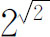
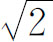

4．函数概念
按照伽利略程序进行的科学探讨，其第一个数学收获来自对运动的研究。这个问题吸引了17世纪的科学家和数学家。其原因是容易知道的。虽然在17世纪的早期，特别是在伽利略给太阳中心论增添了证据之后，开普勒的天文学已为一般人所接受，但是他的椭圆运动定律只是近似的，除非天空只有太阳和一个行星（在这个理想情形下，该定律是准确的）。人们已经在考虑着这样一些思想：每个行星的椭圆运动受到其他行星的干扰，月球绕地球的椭圆运动受到太阳的干扰。事实上，作用于任何两个物体间的引力的概念，已由开普勒（还有别人）提示过。因此，如何改进计算行星位置的问题还未解决。开普勒得到他的定律，主要是依靠用曲线去配合天文数据，但他并没有根据基本的运动定律去解释为什么行星沿着椭圆轨道运动。关于如何从运动原理导出开普勒定律这一基本问题，是一个明显的挑战。
改进天文学理论，还有一个实用的目的。为了寻找原料和通商。欧洲人已从事于大规模的、看不见陆地的长距离海航。因此水手们就需要测定纬度和经度的准确方法。纬度可以通过观察太阳或恒星来确定，但测定经度则较困难。16世纪中的测经度的办法是这样得不准确以至经常产生大约500英里的误差。到了大约1514年之后，经度是用月球对一些恒星的相对方向来确定的。并且把从某个标准地点在不同时间观测到的相对方向制成表册。航海者可以测定月球的方向（人所在的地点虽不同，但不太影响月球的方向），又可以利用例如恒星的方向来测定他的当地时间，于是他就可以根据所测定的月球方向直接查表或通过插值，找出标准地点的时间，从而算出他所测定的当地时间和标准地点的时间之差。时间上差一小时意味着经度上差15°。不过，这个方法也不准确。由于那时的船在水上起伏不定，要得到月球的准确方向是困难的；另一方面，由于月球相对于恒星的运动，在几个小时内不会太大，月球的方向必须较为准确地测定。角度上差1′就意味着经度上差0.5°；但是要使误差小于1′，在当时是远远做不到的。虽然有人提出过并且试用过其他测定经度的方法，但是为了扩展并改进已有的表册，进一步了解月球的轨道看来是必要的，而且许多科学家包括牛顿都研究过这个问题。就是在牛顿的时代，关于月球位置的知识仍是这样得不准确以至用表册来确定船在海中的位置，可以导致大到100英里的误差。
那时航运的损失很大，欧洲各国政府甚为关心。1675年，英王查理（Charles）二世在格林尼治（Greenwich）建立起皇家观测台，以期对月球运动得到较好的观测，并且把该台作为测定经度的固定站。1712年，英国政府设立一个“经度测定委员会”，并且设置高到两万英镑的奖金来征求测量经度的方案。
17世纪的科学家也面临着解释地球运动的问题。按照太阳中心的理论，地球既自转又围绕太阳运行。为什么物体应该呆在地球上呢？既然地球不再是宇宙的中心，为什么下降的物体还要落到地球上呢？不仅如此，从一切运动，例如抛射体的运动来看，好像地球是静止的。这些问题激起了许多人的注意，其中包括卡丹、塔尔塔利亚、伽利略和牛顿。抛射体的路线、射程和所能达到的高度，以及炮弹的速度对于高度和射程的影响都是基本的问题，因而当时的亲王们，和现在的国家一样，花了大量的钱来谋求解决。这就需要有新的运动原理来解释地球的现象。科学家们就想到因为宇宙据信是按照一个宏伟的计划造成的，所以能解释地球运动的原理，也能解释天体的运动。
从各种运动问题的研究中出现了一个特殊的问题：如何设计一些较为准确的方法来测量时间？从1348年以后通用的机械钟是不够准确的。佛兰芒人（Flem-ish）的制图家弗里修斯（Gemma Frisius，1508—1555）曾提出用时钟来测定经度。在一个已知经度的地方把钟对好，放在船上；因为船的当地时间比较容易确定，例如按太阳的位置来确定，所以航海者只需记下这两个时间的差数，就能立刻把这个差数翻译成经度的差数。但是截止到1600年，还没有准确的、耐久的、适用于航海的钟。
单摆的运动似乎提供了测量时间的基本装置。伽利略已注意到摆的一个往复所用的时间是固定的，而且看来是与摆幅无关的。他设计了摆钟，并且叫他的儿子造出一个来。但是，对单摆做出基本工作的，却是胡克（Robert Hooke）和惠更斯。虽然摆钟不适于用在船上（为了计算经度，钟每天的误差不得超过二或三秒，而船的运动对摆的影响很大），但它在科学工作中以及家庭和商业方面的计时上，确实是有很大价值的。适用于航海的钟终于由哈里森（John Harrison，1693—1776）在1761年设计出来，在18世纪末开始使用。在这之前，由于没有适当的钟，所以关于月球运动的准确观测，还是那个世纪的主要科学问题。
数学从运动的研究中引出了一个基本概念。在那以后的二百年里，这个概念在几乎所有的工作中占中心位置，这就是函数——或变量间的关系——的概念。伽利略创立近代力学的著作《两门新科学》一书，几乎从头至尾包含着这个概念。伽利略用文字和比例的语言表达函数关系。例如，在他的关于材料力学的作品中，他有时说：“两个等体积圆柱体的面积（底面积除外）之比，等于它们高度之比的平方根。”又如：“两个侧面积相等的正圆柱，其体积之比等于它们高度之比的反比。”在他的关于运动的作品中，他说（例如）：“从静止状态开始以定常加速度下降的物体，其经过的距离与所用时间的平方成正比。”“沿着同高度但不同坡度的倾斜平板下滑的物体，其下滑的时间与平板的长度成正比。”这些话清楚地表明他是在讨论变数和函数，只差把文字叙述表为符号形式这短短的一步了。因为代数的符号化那时正在扩展，所以不久之后，伽利略关于落体距离的叙述就写为s＝kt2，关于沿斜板下滑时间的叙述就写为t＝kl了。
在17世纪引进的绝大部分函数，在函数概念还没有充分认识以前，是当作曲线来研究的。例如，关于logx，sinx和ax等初等超越函数的研究就是这样。伽利略的学生托里拆利（Evangelista Torricelli，1608—1647）在1644年的一封信里，描述他对曲线（用现在的写法）y＝ae-cx（x≥0）的研究（他的原稿直到1900年才刊出）。他是受到当时的对数工作的启发而考虑这条曲线的。笛卡儿在1639年也碰到过这条曲线，但没有谈到它和对数的关系。正弦曲线是通过罗贝瓦尔关于旋轮线的研究，作为旋轮线的伴侣曲线而进入数学的（第17章第2节）。沃利斯在他的《力学》（Mechanica，1670）中给正弦曲线画了两个周期的图。当然，到了那时期，列在表里的三角函数和对数函数的值，是非常精确的。
另一与此有关的事，是用运动概念来引进旧的和新的曲线。在希腊时代，有少数曲线例如割圆曲线和阿基米德螺线，是用运动定义的。但在那时这些曲线不属于正规数学的范围。到了17世纪，看法就不同了。梅森在1615年把前人已知的曲线cycloid（旋轮线）定义为当车轮沿地面滚动时轮上一个定点的轨迹。伽利略证明把物体斜抛（即与地平线成一角度）向空中时，它的路径是一个parabola（抛物线），因而把这曲线看作是动点的轨迹。
把曲线看作是动点的路径这一概念，通过罗贝瓦尔、巴罗和牛顿而获得明显的认可与接受。牛顿在他的《求曲边形的面积》（Quadrature of Curves，写于1676年）中说：“我认为这里的数学量，不是由小块合成的，而是由连续运动描出的。线［曲线］是描画出来的，因而它的产生不是由于凑零为整，而是由于点的连续运动……这样的起源，真正发生在事物的本性中，并且是日常从物体的运动中看见的。”
逐渐地就给这些曲线所代表的各种类型的函数引进了名词和记号。但还存在着许多没有认识到的细微的难点。例如，在17世纪中，函数ax（x是正负整数或分数）的使用，已经很普通了。那时假定（此假定一直到19世纪定义了无理数之后才取消）此函数对于无理数也有意义。因此人们对于形如

的式子没有发生过疑问，而默认为它的值位于同样形式的两个数之间，其中一个的指数是小于 的任何有理数，另一个的指数是大于
的任何有理数，另一个的指数是大于
的任何有理数。笛卡儿所提的几何曲线和机械曲线的区别（第15章第4节），引出了代数函数和超越函数的区别。幸而笛卡儿的同时代人没有注意到他排斥机械曲线的事。通过求面积、求级数和，以及进入微积分里的其他运算，人们发现并研究了许多超越函数。詹姆斯·格雷戈里在1667年证明圆扇形的面积不能表为圆半径和弦的代数函数，从而明确了代数函数和超越函数的区别。莱布尼茨证明sinx不可能是x的代数函数，无意中证明了詹姆斯·格雷戈里所寻求的结果(3)。对于超越函数的完全了解和使用就渐渐地实现了。
17世纪中，函数概念的定义以詹姆斯·格雷戈里在他的论文《论圆和双曲线的求积》（Vera Circuli et Hyperbolae Quadratura，1667）中所给出的最为明显。他定义函数是这样一个量：它是从一些其他的量经过一系列代数运算而得到的，或者经过任何其他可以想象到的运算而得到的。这最后一句话的意思，据他的解释是除了五种代数运算以外，必须再加上一个第六种运算，即趋于极限的运算（我们将在第17章中看到詹姆斯·格雷戈里所关心的是求面积的问题）。詹姆斯·格雷戈里的定义被遗忘了，但无论如何，不久就证明他的定义太窄，因为函数的级数表示式不久就广泛地使用开了。
自从牛顿于1665年开始微积分的工作之后，他一直用“流量”（fluent）一词来表示变量间的关系。莱布尼茨在他1673年的一篇手稿里用“函数”（function）一词来表示任何一个随着曲线上的点的变动而变动的量——例如切线、法线、次切线等的长度以及纵坐标等。至于该曲线本身，据他说是由一个方程式给出的。莱布尼茨又引进“常量”、“变量”和“参变量”，这最后一词是用在曲线族中的(4)。约翰·伯努利自1697年起就谈到一个按任何方式用变量和常量构成的量(5)（“任何方式”一词据他说是包括代数式子和超越式子而言）。到1698年他采用了莱布尼茨的“x的函数”一词作为他这个量的名字。莱布尼茨在他的著作《历史》（Historia，1714）中，用“函数”一词来表示依赖于一个变量的量。
在符号方面，约翰·伯努利利用X或ξ表示一般的x的函数，但到了1718年他又改写为φx。莱布尼茨同意这样做，但又提出用x1，x2等来表示x的函数，其上标是在同时考虑几个函数时用的。记号f（x）是欧拉于1734年引进的(6)。从此函数概念就成了微积分里的中心概念。我们以后将看到这个概念的扩展情况。
参考书目
Bell，A．E．：Christian Huygens and the Development of Science in the Seventeenth Century，Edward Arnold，1947．
Burtt，A．E．：The Metaphysical Foundations of Modern Physical Science，2nd ed．，Routledge and Kegan Paul，1932，Chaps．1-7．
Butterfield，Herbert：The Origins of Modern Science，Macmillan，1951，Chaps．4-7．
Cohen，I．Bernard：The Birth of a New Physics，Doubleday，1960．
Coolidge，J．L．：The Mathematics of Great Amateurs，Dover（reprint），1963，pp．119-127．
Crombie，A．C．：Augustine to Galileo，Falcon Press，1952，Chap．6．
Dampier-Whetham，W．C．D．：A History of Science and Its Relations with Philosophy and Religion，Cambridge University Press，1929，Chap．3．
Dijksterhuis，E．J．：The Mechanization of the World Picture，Oxford University Press，1961．
Drabkin，I．E．，and Stillman Drake：Galileo Galilei：On Motion and Mechanics，University of Wisconsin Press，1960．
Drake，Stillman：Discoveries and Opinions of Galileo，Doubleday，1957．
Galilei，Galileo：Opere，20 vols．，1890-1909，reprinted by G．Barbera，1964 1966．
Galilei，Galileo：Dialogues Concerning Two New Sciences，Dover（reprint），1952．
Hall，A．R．：The Scientific Revolution，Longmans Green，1954，Chaps．1-8．
Hall，A．R．：From Galileo to Newton，Collins，1963，Chaps．1-5．
Huygens，C．：Œuvres complètes，22 vols．，M．Nyhoff，1888-1950．
Newton，I．：Mathematical Principles of Natural Philosophy，University of California Press，1946．
Randall，John H．，Jr．：Making of the Modern Mind，rev．ed．，Houghton Mifflin，1940，Chap．10．
Scott，J．F．：The Scientific Work of René Descartes，Taylor and Francis，1952，Chaps．10-12．
Smith，Preserved：A History of Modern Culture，Henry Holt，1930，Vol．1，Chaps．3，6，and 7．
Strong，Edward W．：Procedures and Metaphysics，University of California Press，1936，Chaps．5-8．
Whitehead，Alfred North：Science and the Modern World，Cambridge University Press，1926，Chap．3．
Wolf，Abraham：A History of Science，Technology and Philosophy in the 16th and 17th Centuries，2nd ed．，George Allen and Unwin，1950，Chap．3．
————————————————————
(1) 此书有中译本，书名是《关于托勒密和哥白尼两大世界体系的对话》，上海外国自然科学哲学著作编辑组译（据加利福尼亚大学1953年英译本译出）。——译者注
(2) Opere，4，171．
(3) Math．Schriften，5，97-98．
(4) Math．Schriften，5，266-269．
(5) Mém．de l'Acad．des Sci．，Paris，1718，100ff．＝Opera，2，235 269，p．241 in particular．
(6) Comm．Acad．Sci．Petrop．，7，1734/1735，184-200，pub．1740＝Opera，（1），22，57-75．